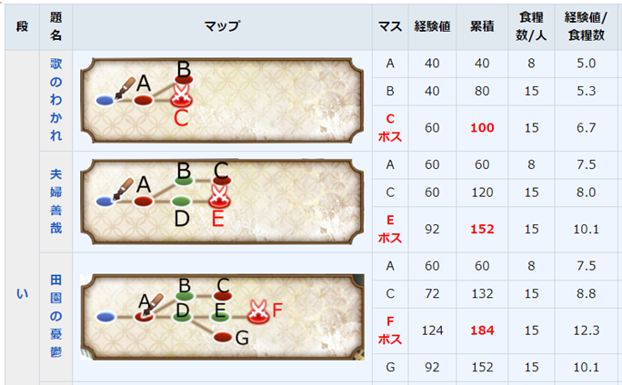
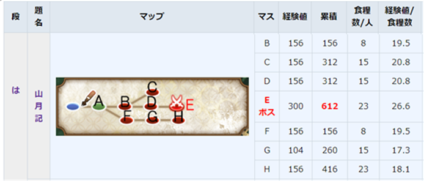
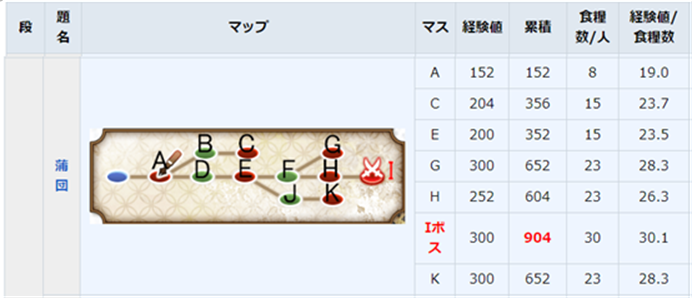
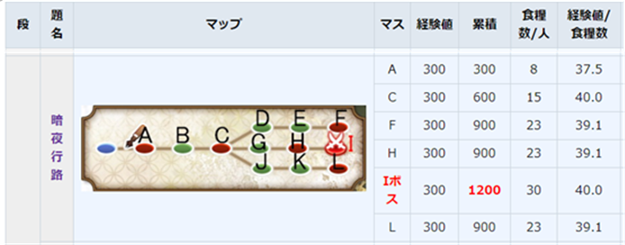
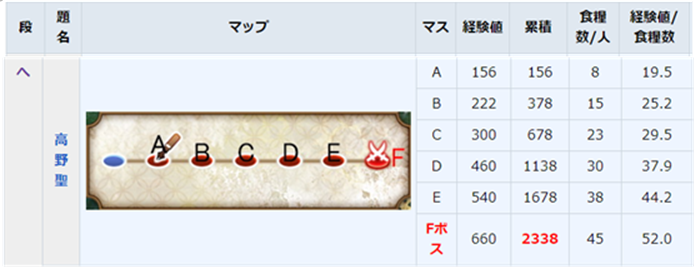
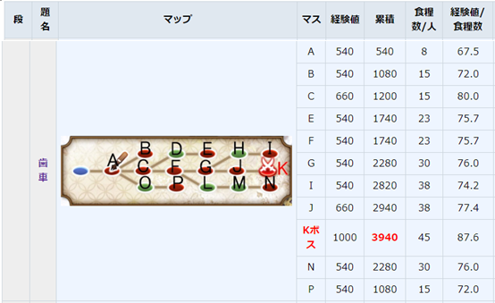
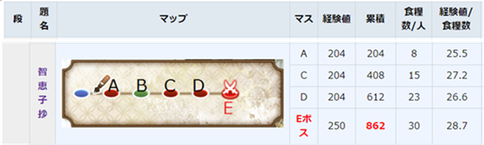
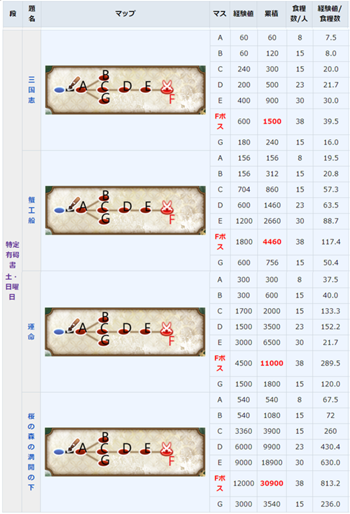

【新手向】新老师的喂养练级指南（饭团消耗攻略）
热烈庆祝文炼动画即将开播~也欢迎新司书入坑文炼！
还在为新文豪练级而脱发吗？日语还很苦手？那就来看看这份练级指南吧~保姆级指导，lv60不是梦~新司书也不用担心日语问题，安心领老师练级即可。
开活动的时候自然建议肝活动练级，还有报酬拿，没开活动的时间只能打日常本，本指南就是整理和提供适合练级的日常本和一些数值，供同事们参考。
正文前请先阅读本食用注意：
Ø 全文近3900字，请注意阅读时长。
Ø 本指南绝大部分为wiki上观点的翻译整理，我自己的看法比较少量，还请多多包涵。
Ø 本攻略面向新司书，暂不包含7图（と），8图（ち）的攻略和数据，也没有涉及到关于转职戒指素材的讨论，如有需要可以先参考吧内精品贴，或者移步wiki。
Ø 中心思想是尽量减少饭团的支出，合理降低战损，并尽量多的获得开花所需的各色小魂中魂。
Ø 攻略默认组队为4人队，如有特殊情况会另行说明。
Ø 攻略内推荐的开花数为不包括声音和衣装的最低开花数。
Ø 攻略数据记录的经验值为将所有敌人全部打倒才能获得的经验，实际战斗过程中如果有老师手滑放跑一两只敌人，获得的经验值会减少（只少了没打死的敌人所携带的单位经验值，其余正常），下文记录的经验值为一位文豪能够获得的数值（该数值与队伍人数无关，每位文豪结算获得的经验值仅由此值累积而来），队伍内mpv的老师获得的经验值是正常的1.5倍，下文中的经验值均为正常情况下的经验值，还请同事注意辨别。
Ø 关于曜日本、经验本的讨论在日常本攻略之后。
Ø 善用只看楼主。必要时可以直接搜索一些关键词。如有疑问和错误也欢迎指出、订正。
参考资料：数据及参考资料均来自wiki的UYpage和よくある|page的练级部分，日语不苦手的司书可以去看看。
那么先来看看概览
|
地图 |
书名 |
适合文豪等级 |
适合开花数 |
|
1-1 |
歌のわかれ |
Lv1~8 |
0~4 |
|
1-2 |
夫D善哉 |
||
|
1-3 |
田@のnd |
||
|
3-3 |
山月 |
Lv10~15 |
5~8 |
|
4-1 |
蒲 |
Lv18左右 |
大于8 |
|
5-1 |
暗夜行路 |
Lv25以上 |
大于11 |
|
6-3 |
高野} |
Lv40以上 |
大于15 |
|
6-4 |
n |
Lv40以上 |
大于15 |
|
特定有碍 |
抒情小曲集 |
Lv15以上 |
大于10 |
|
一握の砂 |
|||
|
智{子抄 |
接下来对以上地图进行逐一介绍说明，详细叙述推荐理由，以及推荐练级策略，队伍配置，推荐的文豪等级和开花数以楼上概览图为参考。推荐的中心思想是尽量减少饭团的支出，合理降低战损减少修理费用，并尽量多的获得开花所需的各色小魂中魂。
补充计算公式：累积经验=∑经验值；饭团数/人=一位文豪行进至该点所需饭团数；
经验值/饭团=累积经验/（饭团数/人）。下文表中的数值由以上公式计算而来。

对1-1,1-2,1-3统一说明如下：
饭团支出方面：如果饭团在低保线（资材保有最大值）以下时，刷这三个图会赠送一定数量的饭团，能够减少一部分饭团的消耗，赠送的饭团数量与潜书的文豪人数有关，四人队最多，适合新司书初期白手起家。如果饭团数量在低保线以上，潜书则不会赠送饭团。
战损方面：这三个图出现的敌人都是些小纸团，小墨瓶，战损不高，不用太担心。
素材掉落方面：1-1掉落小蓝，1-2掉落小黄，1-3掉落小红，另外1-3还可能掉落一个想魂（中）。
综合攻略：1-2,1-3的 经验值/饭团 数值略高于1-1，都通关了可以根据自己的需要选择练级。
|  |
饭团支出方面：最多只用进行三次战斗，下路沟与进王点所需要的饭团数量相等。总体饭量消耗不大。
战损方面：中路B、D会出现敌鞭，但等级不高，其他位置只有小墨瓶，总的来说敌军火力不高。当队伍中有Lv12以下的文豪时，强制沟下路，就避开了敌鞭，所以适合带还没满Lv12的老师慢慢练级。老师等级上来了，走B-C、B-D-E获得的经验也合适，战损也下来了。
素材掉落方面：进门就是一个小蓝的资源点，击败敌军还能随机掉落三种颜色的中魂，适合重复刷了捡垃圾。
综合攻略：如果家里有中高等级的鞭职文豪，可以让他带三位低等级文豪一起练级，既降低了鞭职文豪初期略微拖后腿的影响，也降低了战损，愉快练级，对新老师的要求也可以略微降低，可以常驻一段时间。
|  |
饭团支出方面：经验值/饭团 的数值略高于3-3山月记。
战损方面：只有一号二号的纸团和小墨瓶，没有特别强的敌人。队伍内弓职文豪与鞭职文豪合计三人以上必踩王点，可以通过多带弓来回避战损。
素材掉落方面：中路资源点D掉落小红，F掉落小黄；岔路B、J掉落小蓝；击败敌军也能随机掉落三种颜色的中魂。
综合攻略：开花要求略高于3-3山月记，可以只带三位弓、鞭文豪，减少一个人的饭量消耗，进一步保住饭团；也可再多带一人协同练级。增加队伍内弓职文豪的数量也能通过回避有效降低战损。
|  |
饭团支出方面：到达boss战斗四次消耗60%饭量，其他只用战斗三次消耗45%饭量，比4-1蒲獾木验多，比4-1的饭量消耗小，练级体感舒适。
战损方面：本图没有大墨瓶，有二号敌枪、二号纸团，老师们打起来没有多少压力，十分适合练级，体感舒适。
素材掉落方面：中路资源掉落蓝魂，上路掉落黄魂，下路掉落红魂，中垃圾小垃圾都有，素材不愁。
综合攻略：分叉路口只有一个，没有啥组队要求，等级和开花差不多了的话，特别适合常驻的图。反正我是爱的不得了，良心地图，住到老师们Lv40完全没问题。
|  |
饭团支出方面：一路直线冲到王点的话饭团点数就见底了（只剩10%），刷多了这张图就变成了饭团消失术了，对饭团不太友好，介意这点的话注意避雷。
战损方面：除了王点，前五个点分别是前五章第四节的大boss，新老师见到可能会苦手，但Lv40+的老师还是能稳定刷图的，一个点只有一只敌军，集中火力的话一般一两回合就能结果敌人，王点的三只敌人比较强，打不过或者担心修理费可以提前回家。
素材掉落方面：直线map的缘故，击败敌人能稳定掉落三色中小魂，素材不愁。
综合攻略：首先要保证老师们Lv40+有一定练度了，直线map不挑职业，可以多带弓，可以王点前回家，除了消耗饭团没什么不好的地方，经验增加也还算可观，6-4沟腻了可以来这解解闷，特别缓解心情。
|  |
饭团支出方面：由于是练级，目标不是王点，为了适当减少饭团支出，可以选择在打完C点后就立即回家，或者你进门就沟了，那么就只用花费30%饭量就赚到1000+经验了，是一种比较经济的做法，能节约一些饭墨。
※※※战损方面：这里我们只讨论C点及之前可能遇到的敌人，必须要意识到（重点）：C、P两点是出现了大墨瓶的，不暴击（笔杀奥义or双笔神髓or急所攻击）是无法打死的，P点两只大墨瓶，C点三只大墨瓶，特别是C点中还有一只很强的大墨瓶，Lv50开花20的弓职文豪暴击一次可能没有办法结束他的生命（也有可能脸好凑巧打死了），Lv50其他职业的文豪暴击一次 目测 是可以打掉的（我刷的时候是这个样子，如果有例外情况发生的话还请通知我及时订正）。A、B两点有三号纸团，B有一只二号敌鞭。所以这个图不可避免存在一定程度上的战损，为了练级，可以多带弓，并且一定要配上有急所攻击效果加成的装像，祈祷老师们不手滑。不愧是芥川大老师的书~
素材掉落方面：由于只走了这张地图的一小部分，素材掉落较少，小垃圾各色都有，中垃圾要看脸，资源O点有小红垃圾。
综合攻略：以练级为目的的话不带四职队也没问题，反倒可以增加队伍里弓职文豪的数量，提高打掉敌人的成功率，经验获得效率还算可观，建议在没有其他选择的情况下来刷，可以把老师们带上Lv50。练Lv40以上的老师选择在6-3还是6-4，需要司书根据家里的条件，装像和老师的职业，做出适合自家的决定，合理安排练级。
练级总结：
首先同事们要准确评估家里的经济状态（准备适量的饭墨用于练级消耗），还要注意观察老师们的精神状态和疲劳值，记得及时送老师去床上睡觉，红脸sad了及时休息。也要注意等级上去了，开花数也要及时跟上。文炼的战斗系统里，0伤基本不可能，侵蚀值的减少基本不可避免，请同事们提前有心理准备。还是那句话，开活动了就肝活动练级美滋滋，没其他选择了再考虑来日常本。四五十级的老师们水平已经比较稳定，能独当一面，肝活动不是问题。Lv50以上后经验条会拉长，升级所需要的经验会增加很多，练级也变得漫长，坚持就是胜利！祝大家的老师早日满级~
对曜日关的统一说明：
|  |
本就是素材掉落关，一条直线走到底，捡垃圾自然不用多说，对文豪的等级要求介于3-3和4-1之间，经验值/饭团数值良好，喂饱了老师可以跑两次，敌人也不算特别强，相对来说选择练级比较友好，但开花数要尽量大于10，开花跟上的话战损就不会很高，开花不足的话被敌军敲到会比较疼。
除此之外wiki上还提供了一种思路，只打曜日本第3关的前两个点，节约了饭团支出，一次经验量累积有900，第三关适合的文豪等级本来是Lv40开花15，如果只打前两个点的话要求可以适当降低，三十多级（？）也可以一试？（这条思路没实战考证过，仅供参考）
对经验本（周末本）的统一说明：
经验本顾名思义经验多多，所以数值普遍喜人，但是沟率惊人，一切都是拼脸，四张地图都长一个样，中路boss经验较多，走一次就能感动司书一次，下路其次，上路经验最少，走经验本多半都是上下沟拳，为了进boss练级就要施展饭团消失术，几个回合下来就能感受到老师们饭量的惊人，司书落泪。前三张图敌人都不强，冲就完事，战损不高，第四张图最后那个boss虽然防御力低，但血量多的害怕，Lv50开花18的老师们也不一定完全打死，只是练级的话不打死也没关系，就是经验会少一点罢了，想要灭了他可以多带弓，多开花。重复刷经验本容易红脸sad，注意换队休息。脸好的话在经验本升级还是很快的，脸不好的话升级也很快的，就是饭团见了底。经验本不掉落开花素材。
|  |